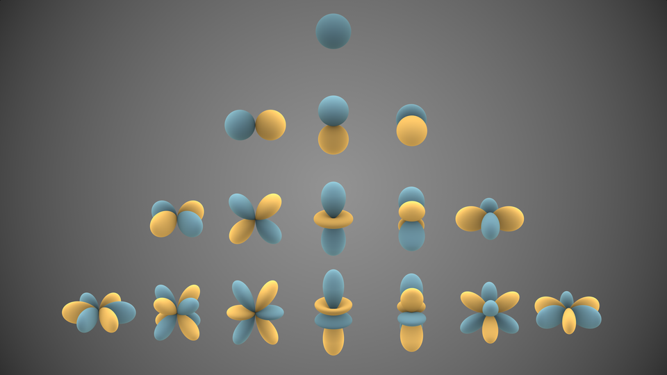
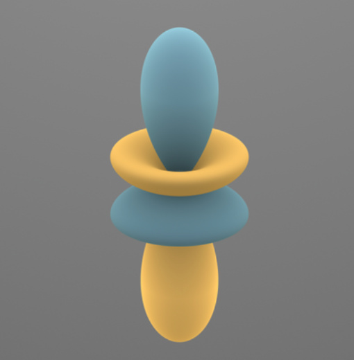
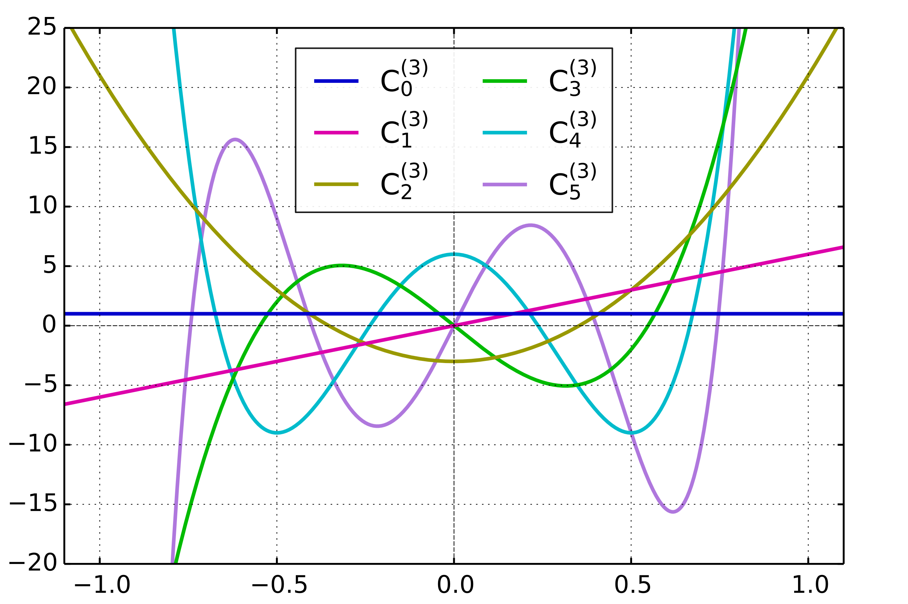

Zonal spherical harmonics
Understanding the eigenfunctions of the spherical Laplacian is a central task. These eigenfunctions form the building blocks of harmonic analysis on spheres.

A particularly important situation arises when the function of interest depends only on the angular separation from a fixed axis.

Such zonal functions retain full rotational symmetry around that axis and reduce the spherical Laplacian to a one-dimensional operator. Its eigenfunctions turn out to be polynomials on the interval \([-1,1]\) with a very specific weight. These polynomials are the Gegenbauer polynomials, which generalize several classical families of orthogonal polynomials, including the Legendre and Chebyshev polynomials.
Reminder on differential operators
Many problems require the ability to compute gradients, divergences, and Laplacians in arbitrary coordinate systems. Before specializing to spherical coordinates in higher dimensions, it is useful to recall the geometric meaning of these operators and the minimal formalism needed to manipulate them. Suppose that a point in space is described by a collection of coordinates \[ q = (q^1, \dots, q^n). \] If we make a small change \((dq^1,\dots,dq^n)\), the physical displacement has a length denoted by \(ds\). In an orthogonal coordinate system, each coordinate direction comes with a scale factor \(h_i(q)\) such that a change \(dq^i\) corresponds to a “physical” displacement of length \(h_i(q), dq^i\) along the unit vector \(e_i\). These functions \(h_i\) encode how the coordinate system stretches or compresses distances along each axis. Once the scale factors are known, the rest of the differential operators follow directly.
The gradient: For a scalar function \(f(q)\), the change produced by varying only \(q^i\) is approximately \(\partial_{d q^i} f \cdot dq^i\). The physical distance traveled in this move is \(h_i \, dq^i\). The rate of increase of \(f\) per unit distance in the direction \(e_i\) is therefore \(\frac{1}{h_i} \frac{\partial f}{\partial q^i}\). This is the \(i\)th component of the gradient. Summing over all directions gives \[ \nabla f = \sum_{i=1}^n \left( \frac{1}{h_i}\frac{\partial f}{\partial q^i} \right) e_i. \]
The divergence describes the net outflow of a vector field from an infinitesimal volume around a point. Consider a vector field \(v = \sum_i v^i e_i\). Place a tiny coordinate-aligned box at a point. Its physical edge lengths are \(h_i \, dq^i\), so its infinitesimal volume is: \[ dV = \left( \prod_{i=1}^n h_i(q) \right) dq^1 \cdots dq^n. \] The flux of \(v\) through the pair of faces orthogonal to \(e_i\) is \(v^i\) multiplied by the physical area of those faces: \(\prod_{j\ne i} h_j\). The divergence is the total outward flux divided by the infinitesimal volume: \[ \mathop{\mathrm{div}}v = \frac{1}{\prod_j h_j} \sum_{i=1}^n \frac{\partial}{\partial q^i} \left( v^i \, \frac{\prod_j h_j}{h_i} \right). \]
This expression is simply “flux in direction \(i\)” minus “flux in direction \(i\)” across the opposite face, normalized by the physical volume.
The Laplacian is the divergence of the gradient. It describes how a scalar function curves around a point since it measures the net outflow of the gradient field. It also encodes how \(f\) compares to its local averages over small spheres. In orthogonal coordinates, inserting the expression for the gradient into the divergence formula yields: \[ \Delta f = \frac{1}{\prod_j h_j} \sum_{i=1}^n \frac{\partial}{\partial q^i} \left( \frac{\prod_j h_j}{h_i^2} \frac{\partial f}{\partial q^i} \right). \tag{1}\]
This is the expression we will apply to spherical coordinates in the next section.
Spherical coordinates and the Laplacian
To analyze rotationally symmetric functions, we now specialize the general formulas from the previous section to spherical coordinates in \(\mathbb{R}^d\). A point \(x \in \mathbb{R}^d\) is described by a radius \(r \ge 0\) together with \((d-1)\) angular coordinates \[ (r,\theta_1,\dots,\theta_{d-1}). \] The radius \(r = \|x\|\) determines the sphere on which the point lies, and the angles \(\theta_1,\dots,\theta_{d-1}\) specify a direction on the unit sphere \(S^{d-1}\). Geometrically, the construction is recursive: fixing \(\theta_1\) leaves an \(S^{d-2}\); choosing \(\theta_2\) then fixes a point on that \(S^{d-2}\), and so on until the last coordinate \(\theta_{d-1}\), which parameterizes a circle. In these coordinates, motion in the radial direction has physical length \(dr\) so that \(h_r = 1\). Motion in the direction of \(\theta_1\) traces a circle of radius \(r\) so that \(h_{\theta_1} = r\). Holding \(r\) and \(\theta_1\) fixed while varying \(\theta_2\) traces a circle of radius \(r \sin \theta_1\), hence \(h_{\theta_2} = r \sin \theta_1\). Continuing in this way, the general pattern is \[ h_{\theta_k} = r \sin \theta_1 \cdots \sin \theta_{k-1}, \qquad k = 1,\dots,d-1. \] These scale factors reflect the fact that angular displacements correspond to motion along circles whose radii depend on the previously chosen angles. The physical volume of an infinitesimal coordinate box is the product of all scale factors, giving \[ dV = r^{d-1}\, (\sin\theta_1)^{d-2} (\sin\theta_2)^{d-3} \cdots (\sin\theta_{d-2})\, dr\, d\theta_1 \cdots d\theta_{d-1}. \] The factor \(r^{d-1}\) is the familiar scaling of the surface area of a sphere. The remaining sine powers encode the intrinsic geometry of \(S^{d-1}\).
Spherical Laplacian: Inserting these scale factors into the general expression Equation 1 gives the Laplacian in spherical coordinates: \[ \Delta f = \big[ \partial_r^2 f + \frac{d-1}{r}\partial_r f \big] + \frac{1}{r^2}\,\Delta_{S^{d-1}} f. \] The operator \(\Delta_{S^{d-1}}\) is the Laplacian intrinsic to the unit sphere \(S^{d-1}\), whose expression is not particularly enlightening or useful for our purposes here. For example, the first term reads: \[ \Delta_{S^{d-1}} f = \frac{1}{(\sin\theta_1)^{d-2}}\,\partial_{\theta_1} \left( (\sin\theta_1)^{d-2} \,\partial_{\theta_1} f \right) + \cdots \] What matters is that it acts only on the angular variables \(\theta_1,\dots,\theta_{d-1}\), treating \(r\) as a constant. The factor \((d-1)/r\) arises because the surface area of spheres grows like \(r^{d-1}\), while the factor \(1/r^2\) preceding \(\Delta_{S^{d-1}}\) reflects the fact that angular motion takes place along circles of radius \(r\). Furthermore, this scaling is clear by dimensional analysis: the Laplacian has units of inverse length squared, and \(\Delta_{S^{d-1}}\) is dimensionless since it acts on the unit sphere. In the next section, we restrict \(\Delta_{S^{d-1}}\) to zonal functions, which depend only on the polar angle \(\theta_1\).
Zonal functions
We now study the angular part of the Laplacian on the sphere. A particularly important class of functions are the zonal functions, which depend only on the angle with a fixed direction. Fix a unit vector \(e \in S^{d-1}\); typically, one takes \(e\) to be the “north pole” \(e = (1,0,\ldots,0)\) and we will do so here. A function \(f: S^{d-1} \to \mathbb{R}\) is called zonal (with respect to \(e\)) if it only depends on the inner product \(x \cdot e = \cos \theta_1\); this means that there is a function \(F: [0,\pi] \to \mathbb{R}\) and \(G: [-1,1] \to \mathbb{R}\) such that \[ f(x) = F(\theta_1) = G(z) \] where we set \(z = \cos \theta_1 = x \cdot e\). To keep notation simple, we will often conflate \(f\), \(F\), and \(G\) and write \(f(x)\), \(f(\theta_1)\), or \(f(z)\) depending on context. The zonal functions describe rotational symmetry around the axis spanned by \(e\) and arise naturally in problems where only the angular separation between two points matters. If \(f\) depends only on the polar angle \(\theta_1\), all derivatives with respect to \(\theta_2,\dots,\theta_{d-1}\) vanish. The spherical Laplacian therefore reduces to the one-dimensional operator \[ \Delta_{S^{d-1}} f(x) = \frac{1}{\sin^{d-2}\theta_1}\, \partial_{\theta_1}\! \left( \sin^{d-2}\theta_1 \, \partial_{\theta_1} f(\theta_1) \right). \] Using \(\sin\theta_1 = \sqrt{1-z^2}\) and the chain rule, simple but tedious algebraic manipulations lead to the expression: \[ \Delta_{S^{d-1}} f(x) = (1-z^2) f''(z) - (d-1) z f'(z). \] A convenient notation for the zonal part of the spherical Laplacian is \[ \mathcal{L}_d f(z) = (1-z^2)\, f''(z) - (d-1)\, z\, f'(z) \] for \(z \in [-1,1]\). This operator is simply the restriction of the spherical Laplacian \(\Delta_{S^{d-1}}\) to zonal functions. If \(d\sigma\) denotes the surface measure on \(S^{d-1}\), then for any two zonal functions \(f,g: S^{d-1} \to \mathbb{R}\), one has the weighted self-adjointness property: \[\int_{S^{d-1}} f(x) \, g(x) \, d\sigma(x) = \int_{-1}^1 f(z) \, g(z) \, w_d(z)\, dz, \] where, computing the marginal over all but the first angle, gives the weight: \[ w_d(z) = (1-z^2)^{\frac{d-3}{2}}. \] Furthermore, since the spherical Laplacian is self-adjoint on \(S^{d-1}\) with respect to the standard inner product, so is \(\mathcal{L}_d\) with respect to this weighted inner product: \[\int_{-1}^1 (\mathcal{L}_d f)(z)\, g(z)\, w_d(z)\, dz = \int_{-1}^1 f(z)\, (\mathcal{L}_d g)(z)\, w_d(z)\, dz. \] Now, suppose we look for eigenfunctions of the spherical Laplacian on \(S^{d-1}\), i.e. functions \(f\) satisfying \(-\Delta_{S^{d-1}} f = \lambda f\), that are zonal: zonal spherical harmonics.
This eigenvalue equation becomes \(-\mathcal{L}_d f = \lambda f\), which reads: \[ (1-z^2) f''(z) - (d-1) z f'(z) + \lambda f(z) = 0. \tag{2}\] Since the eigenvalues of the spherical Laplacian on \(S^{d-1}\) are given by: \[\lambda = n(n+d-2)\] for integers \(n \ge 0\), we set \(\lambda = n(n+d-2)\) in the following.
Gegenbauer polynomials.
Equation 2 is a second-order ordinary differential equation on the interval \([-1,1]\) and it is customary to parametrize it by \(\alpha > -\tfrac12\) by setting \(\alpha = d/2-1\). Since the eigenvalues of the spherical Laplacian in dimension \(d\) are \(\lambda = n(n+d-2)\), the equation becomes: \[(1-z^2) y''(z) - (2\alpha + 1) z y'(z) + n(n+2\alpha)\, y(z) = 0. \tag{3}\] One can then show that this equation admits polynomial solutions of degree \(n\), called the Gegenbauer polynomials and usually denoted by \(C_n^{(\alpha)}(z)\). Furthermore, if we insist that the solutions be regular on the entire interval \([-1,1]\) and can be lifted to smooth functions on the sphere, then these polynomial solutions are the only ones! They can be recursively defined as \(C_0^{(\alpha)}(z) = 1\) and \(C_1^{(\alpha)}(z) = 2\alpha z\), together with the recurrence relation: \[ n(n+1) \, C_{n+1}^{(\alpha)}(z) = 2 (n+\alpha) z \, C_n^{(\alpha)}(z) - (n+2\alpha -1) \, C_{n-1}^{(\alpha)}(z). \]

By construction, for any vector \(e \in S^{d-1}\), the function defined on the sphere by \[Y_n(x) = C_n^{(d/2-1)}(x \cdot e)\] is a zonal spherical harmonic of degree \(n\) in dimension \(d\) with corresponding eigenvalue \(\lambda = n(n+d-2)\). Legendre polynomials are a special case of Gegenbauer polynomials obtained by setting \(\alpha = \tfrac12\), i.e. \(d=3\). In that case, the Legendre polynomial are orthogonal with respect to the uniform weight on \([-1,1]\) since \(w_3(z) = 1\). Similarly, setting \(\alpha = 0\) (i.e. \(d=2\)) gives the Chebyshev polynomials of the first kind, which are orthogonal with respect to the weight \(w_2(z) = (1-z^2)^{-1/2}\). This also illuminates why the Chebyshev polynomials are defined on the interval \([-1,1]\) with that specific weight and satisfy \(T_n(\cos \theta) = \cos(n \theta)\): they are simply the zonal spherical harmonics in dimension \(d=2\).